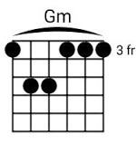
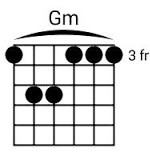

CHORD DASAR Mayor


CHORD DASAR Minor

 

Keterangan :
- Gambar silang (X) = berarti senar tidak ditekan dan tidak berbunyi.
- Gambar lingkaran hitam = berarti senar ditekan dan berbunyi.
- Gambar fret (Fr) = 1 Fr. berarti senar ditekan di baris ke 1.
- Gambar garis melengkung = berarti semua senar ditekan dengan jari telunjuk.